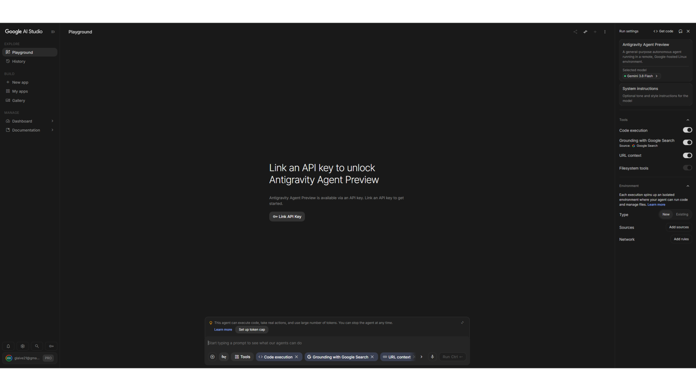
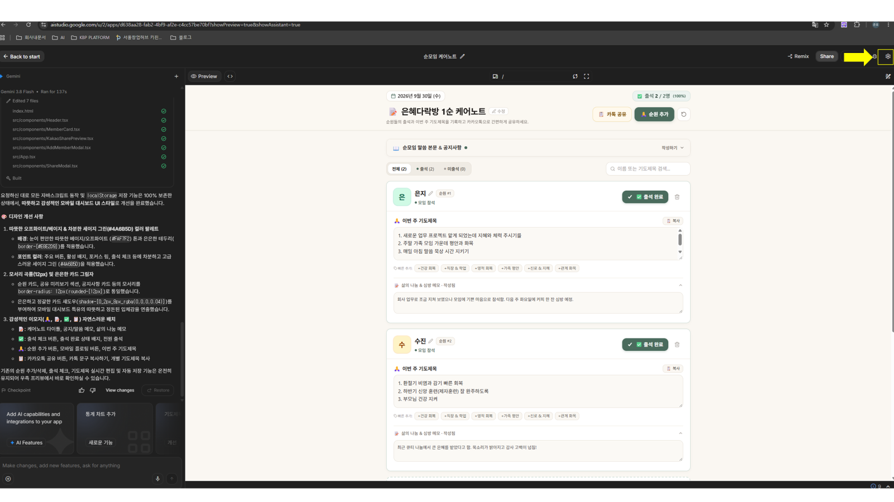
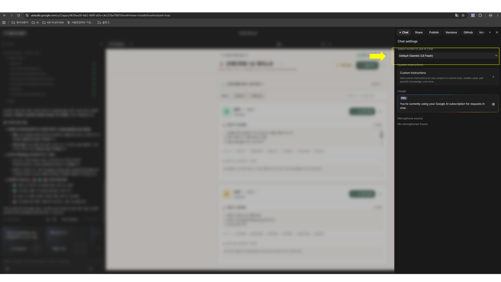
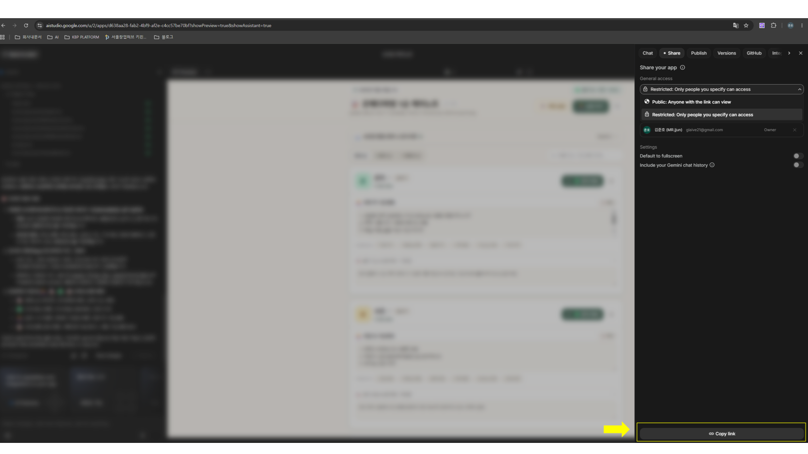

컴퓨터의 복잡한 기술이나 어려운 규칙은 AI에게 모두 맡기고, 사람은 "내가 원하는 느낌과 목적"에만 집중한다는 뜻입니다.
🛋️ 2. 인테리어에 빗대어 보면 딱 이렇습니다
순장님은 '인테리어 의뢰인', AI는 '시공 전문가'입니다
집 인테리어를 할 때, 순장님이 직접 도배를 하거나 타일을 붙이지 않습니다.
인테리어 전문가에게 "거실은 아늑한 베이지 톤으로 해주시고, 식탁은 6인용으로 놓아주세요"라고 원하는 공간의 느낌과 구조만 말하면 전문가가 시공해 주는 것과 같습니다.
👩💼 순장님의 역할 (인테리어 의뢰인)
"우리 순원 출석이 한눈에 들어오는 깔끔한 화면으로 만들어줘"
➔ 원하는 목적과 화면의 느낌(Vibe)만 설명
🤖 AI의 역할 (시공 전문가)
순장님의 말에 맞춰 실제 누르고 작동하는 화면을 제작
➔ 기술적인 코딩과 버튼 배치는 AI가 전담
📖 3. 오늘 만들 앱 vs 오프닝 완성작의 차이
"내 노트북 속 비밀 수첩"과 "아이디로 들어가는 정식 사이트"
오프닝에 보여드린 완성작과 오늘 우리가 만들 앱의 차이를 쉽게 비교해 드립니다.
🚀 오늘 우리가 실습할 앱 (1단계)
내 노트북 속 '나만의 비밀 수첩'
아이디 / 비밀번호 없음: 회원가입 필요 없이 지금 바로 만듭니다.
내 노트북 전용: 내 브라우저 안에 안전하게 저장되어 나만 편하게 씁니다.
오늘의 목표: 코딩 없이 내 손으로 직접 작동하는 화면을 완성하는 기쁨을 누립니다!
✨ 오프닝에 시연한 완성작 (2단계)
네이버/쿠팡처럼 '아이디 로그인 정식 사이트'
구글 로그인 탑재: 내 계정으로 로그인해서 안전하게 접속합니다.
언제 어디서나 연결: 회사 PC든 스마트폰이든 아이디만 치면 똑같이 열립니다.
발전 모습: 1단계 수첩을 잘 만들어둔 뒤, 로그인과 서버를 덧붙여 정식 배포한 완성형입니다.
💡 순장님, 수첩을 먼저 지어봐야 나중에 로그인 사이트도 만들 수 있습니다!
처음부터 회원가입이나 복잡한 인터넷 연결을 배우면 너무 어렵습니다. 오늘 150분의 핵심 목표는 "내 손으로 버튼이 눌리고, 출석이 체크되고, 카톡 보고서가 복사되는 진짜 화면(수첩)"을 완성하는 것입니다.
🔄 4. 도구의 대전환
"기성품에 끼워 맞추기"에서 "우리 순 맞춤 집 짓기"로
🧱 과거의 방식
남들이 만들어 놓은 기성품 도구(엑셀, 노션, 메모장)에 내 사역을 억지로 끼워 맞췄습니다. 내 마음에 100% 들지 않아도 참고 써야 했습니다.
✨ 바이브 코딩 시대
오직 '우리 순'만을 위한 맞춤 도구를 내가 직접 의뢰해서 만듭니다. 기술자가 아니라, 순원들을 가장 사랑하고 사역을 잘 아는 순장님이 최고의 제작자입니다.
🚶♀️ 5. 바이브 코딩이 진행되는 3단계 과정
1
원하는 모습 말하기
머릿속 생각을 한국어로 편하게 이야기합니다. "순원 이름이 쭉 나오고, 이번 주 심방 여부를 한눈에 체크하고 싶어"
2
화면 확인하고 만져보기
AI가 만들어준 화면을 오른쪽 스마트폰 미리보기 창에서 직접 눌러보고 입력해 봅니다.
3
대화하며 다듬기
"식탁 위치를 옮겨주세요" 하듯 카톡 대화하듯 편하게 살을 붙여 나갑니다. "다 좋은데, 오늘 날짜가 맨 위에 항상 보이게 해줘"
🎁 오늘 실습으로 얻게 될 두 가지 열매
① 사역: 카톡방을 위아래로 올려보며 기도제목과 출석을 정리하던 번거로움이 사라집니다.
② 일터: 내일 회사에서도 "우리 팀 주간 업무 취합 화면 하나 만들어줘"라고 당당하게 지시할 수 있습니다.
💡 실습 전 꼭 확인하세요!
Google AI Studio 화면을 처음 열면 복잡해 보이지만, 실제 사용하는 곳은 딱 정해져 있습니다.
아래 노란색 화살표를 따라 화면의 위치와 설정을 눈으로 먼저 확인해 두시면 실습이 10배 쉬워집니다!
📍 Part 1. 시작하기 & 새 앱 만들기
화면 01
AI Studio 접속 첫 화면 (Playground)
AI Studio에 처음 접속하면 중앙에 복잡한 개발자용 화면(Playground)이 보입니다. 당황하지 마세요!
우리는 화면 중앙을 보지 않고, 좌측 메뉴의 [BUILD] 영역으로 시선을 이동합니다.

✔ 중앙의 API Key 연결이나 복잡한 설정은 전문 프로그래머 영역이므로 누르실 필요가 없습니다.
화면 02
새 앱 시작하기 (+ New app)
좌측 메뉴에서 `+ New app`(노란색 화살표)을 누르면 깨끗한 새 작업실이 열립니다.
화면 중앙의 "Describe an app and let Gemini do the rest" 입력창에 우리가 준비한 프롬프트를 넣으면 앱이 빌드됩니다.
✔ 실습 탭의 [Step 1 프롬프트]를 복사해서 이곳에 붙여넣고 엔터를 치면 나만의 첫 앱이 탄생합니다.
📍 Part 2. 내 앱 보관함 & 갤러리 둘러보기
화면 03
내가 만든 앱 보관함 (My apps)
좌측 메뉴의 `My apps`를 누르면, 지금까지 내가 만들었던 모든 웹앱들이 목록으로 저장되어 있습니다.
언제든지 클릭해서 이전에 만들던 앱을 다시 열고, 수정하거나 계속 사용할 수 있습니다.
✔ 오늘 실습이 끝난 뒤에도 언제든 `My apps`에 들어오시면 내가 만든 순모임 케어노트가 그대로 보관되어 있습니다.
화면 04
전 세계 사용자들의 작품 둘러보기 (Gallery)
좌측 메뉴의 `Gallery`를 누르면 다른 사람들이 Gemini로 만든 인터랙티브 앱들을 구경할 수 있습니다.
"이런 도구도 자연어로 만들 수 있구나!" 영감을 얻으실 수 있는 좋은 공간입니다.
📍 Part 3. 셋팅 버튼 & AI 모델 확인
화면 05 & 06
우측 상단 셋팅(톱니바퀴) & Gemini 3.8 Flash 확인
앱 빌드 화면 우측 상단 끝의 톱니바퀴(Settings) 버튼(화면 5)을 누르면 오른쪽 사이드 패널이 열립니다.
`Chat settings`의 모델 선택창에 최신 안정 모델인 `Default (Gemini 3.8 Flash)`(화면 6)가 지정되어 있는지 확인할 수 있습니다.


✔ 기본값으로 Gemini 3.8 Flash가 잡혀 있으므로, 별도로 옵션을 변경하지 않으셔도 안전하게 동작합니다.
🚨 Part 4. [가장 중요] 내 폰으로 보낼 때 필수 설정 3단계
⚠️ 스마트폰에서 "권한 없음(Restricted)" 에러가 뜨지 않게 하는 법:
우측 상단의 [Share]를 눌렀을 때, 아래 3장의 사진에 나온 순서대로 반드시 설정을 변경해야 내 스마트폰에서 별도 로그인 없이 바로 앱이 열립니다!
필수 1단계
General access ➔ 반드시 'Public'으로 변경!
기본값이 🔒 Restricted(제한됨)으로 되어 있으면 내 폰에서 열리지 않습니다!
반드시 클릭하여 노란색 화살표가 가리키는 `🌐 Public: Anyone with the link can view`를 선택하세요.
필수 2단계
Include your Gemini chat history ➔ 꺼짐(OFF) 확인
내가 AI와 나눈 프롬프트 대화 기록이 다른 사람에게 공개되지 않도록 보호하는 보안 설정입니다.
노란색 화살표의 스위치가 회색(꺼짐/OFF) 상태인지 확인하세요. (기본값이 꺼짐입니다)
필수 3단계
하단 [Copy link] 클릭하여 내 카톡으로 전송!
설정이 끝났다면 창 맨 아래 노란색 화살표의 `Copy link` 버튼을 누릅니다.
복사된 링크를 PC 카톡 '나와의 채팅방'에 붙여넣고 스마트폰에서 링크를 터치하면 끝납니다!

✔ 상단 메뉴의 `Publish`는 누르지 마세요! 클라우드 유료 결제 창이 뜰 수 있습니다. 오직 `Share` 탭만 사용합니다.
⚠️ 브라우저 및 개인정보 보안:
• Mac 사용자: Safari 브라우저는 복사 기능이 차단될 수 있으니 반드시 Chrome 브라우저를 실행해 주세요.
• 실습 시 실제 순원의 이름과 기도제목 대신 가상의 이름(은지, 수진 등)을 사용해 주세요.
💡 회사 계정 로그인 충돌 해결법:
회사 구글 계정으로 로그인되어 접속이 차단(403 Error)된다면, 키보드에서 Ctrl + Shift + N (Mac: Cmd + Shift + N)을 눌러 새 시크릿 창을 띄운 뒤 개인 Gmail로 접속하세요!
Step 1 (필수)기본 뼈대 앱 만들기
소요 시간 약 18분
순모임 케어노트의 기본 틀(순원 이름 카드, 출석 체크박스, 기도제목 입력창)을 생성합니다.
모바일 브라우저와 PC에서 바로 편리하게 사용할 수 있는 '순모임 스마트 케어노트' 웹앱(Web app)을 만들어줘.
[필수 요구사항]
1. 상단 헤더: 오늘 날짜 표시, '00다락방 0순 케어노트' 제목 (클릭하여 직접 수정 가능)
2. 순원 목록 카드 리스트:
- 순원 이름
- 모임 출석 체크박스
- 이번 주 나눔 및 기도제목 입력칸 (여러 줄 텍스트 입력 가능)
- 각 순원 카드마다 [삭제] 버튼
3. 하단 컨트롤: 새로운 순원을 추가할 수 있는 [새 순원 추가] 버튼
4. 테스트용 가상 순원 2명(은지, 수진)의 데이터를 기본값으로 화면에 미리 채워줘.
5. 모바일 스마트폰 화면 폭에서도 카드가 깔끔하게 보이도록 반응형 카드 UI로 구성해줘.
외부 백엔드 서버나 로그인 없이 브라우저에서 바로 동작하는 구조로 만들어줘.
완성 후 오른쪽 Preview 화면에서 바로 마우스로 버튼을 누르고 테스트할 수 있게 즉시 실행해줘.
✅ 확인 미션: 우측 스마트폰 화면에 '은지, 수진' 이름과 [새 순원 추가] 버튼이 잘 보이나요?
Step 2 (필수)새로고침해도 유지되는 브라우저 개인 서랍장 연동
소요 시간 약 14분
창을 닫거나 새로고침을 해도 입력한 내용이 내 컴퓨터 브라우저 안에 안전하게 남게 만듭니다. (다른 컴퓨터나 폰으로 자동 연동되지는 않습니다.)
현재 프로젝트의 기존 순원 목록, 순원 추가/삭제, 출석 체크박스, 기도제목 입력 UI와 기능을 100% 그대로 유지해줘.
이번 단계에서는 [데이터 자동 저장 기능]만 정확히 추가해줘.
1. 사용자가 순원을 추가/삭제하거나, 출석 체크박스를 누르거나, 기도제목을 입력할 때마다 별도의 서버 없이 브라우저 자체 로컬 저장소(localStorage)에 모든 데이터가 실시간으로 자동 저장되게 해줘.
2. 사용자가 브라우저를 새로고침하거나 창을 닫았다가 다시 열었을 때, 마지막에 저장된 순원 목록과 입력 내용이 그대로 다시 화면에 복원되어 표시되게 해줘.
3. 기존 레이아웃 스타일과 컴포넌트 구조는 임의로 바꾸지 마.
기존 기능을 손상시키지 말고 오직 브라우저 로컬 저장 연동 로직만 안전하게 적용해줘.
✅ 확인 미션: 기도제목에 글씨를 써보고, 키보드 F5 (Mac: Cmd + R)를 눌러도 글자가 그대로 남아있나요?
★ Step 3 (오늘의 공식 수료 졸업선!)카톡용 문구 자동 생성 + 복사
여기까지 성공하면 오늘 100점 졸업!
버튼 한 번만 누르면 카카오톡 단체방 공유 양식으로 줄바꿈과 이모지가 예쁘게 클립보드에 복사됩니다.
현재 프로젝트의 모든 순원 데이터 관리, UI 레이아웃, 브라우저 로컬 자동 저장 로직을 100% 보존해줘.
이번 단계에서는 화면 하단에 [카카오톡용 문구 자동 생성 및 복사 기능]만 추가해줘.
1. 화면 하단에 '카카오톡 공유 미리보기' 영역을 만들고, 그 안에 읽기 전용 텍스트 상자(readonly textarea)를 항상 눈에 보이게 배치해줘.
- 오늘 날짜, 총 출석 인원 및 명단, 순원별 나눔/기도제목이 정돈된 줄바꿈 포맷(이모지 포함)으로 실시간 자동 조합되어 표시되어야 해.
2. 텍스트 상자 바로 위에 눈에 띄는 색상의 [카톡 문구 복사하기] 버튼을 만들어줘.
- 버튼을 클릭하면 navigator.clipboard.writeText를 사용하여 카톡 양식 전문이 클립보드에 자동 복사되고 "복사 완료! 카톡에 붙여넣으세요"라는 토스트 알림을 띄워줘.
- 만약 브라우저 보안 제약이나 모바일 환경으로 인해 자동 복사가 차단되더라도 에러로 멈추지 말고, 하단 텍스트 상자의 내용이 자동으로 전체 선택(select)되도록 처리한 뒤 "PC에서는 Ctrl+C(Mac: Cmd+C), 스마트폰에서는 길게 눌러 복사하세요"라고 안내해줘.
3. 기존 순원 추가/삭제 및 저장 기능은 절대 건드리지 마.
🎉 졸업 확인: [카톡 문구 복사하기] 누르고, PC 카톡 '나와의 채팅방'에 Ctrl + V (Mac: Cmd + V) 했을 때 예쁜 보고서가 붙여넣어지면 오늘 공식 수료입니다!
Step 4 (바이브 코딩 실전)내 말로 원하는 기능 1개 직접 고쳐보기
진짜 바이브 코딩 체험!
남이 써준 프롬프트 복사는 이제 끝났습니다! 이번에는 내가 원하는 것 딱 하나만 AI에게 직접 한국어로 지시해서 화면을 바꿔보세요.
💡 어떻게 말해야 하나요? 정답 문장은 없습니다! 친구에게 카톡 하듯이 대화창에 한 줄만 쳐보세요.
아래 3가지 추천 미션 중 마음에 드는 것 하나를 골라 클릭하시면 복사됩니다.
추천 1: 시각적 피드백 주기
출석 체크박스를 누르면 해당 순원 카드에 예쁜 색이 칠해지게 해보세요.
"출석 체크하면 그 사람 카드 배경을 연한 초록색으로 바꿔줘." 📋
추천 2: 출석 인원 자동 카운트
상단에 오늘 몇 명이 출석했는지 숫자가 실시간으로 뜨게 해보세요.
"상단에 오늘 총 출석 인원수가 실시간 계산되어 보이게 해줘." 📋
추천 3: 나만의 감성 컬러 바꾸기
배경과 버튼 색상을 내가 좋아하는 따뜻한 톤으로 옷 입혀보세요.
"배경을 크림 베이지로, 버튼을 세이지 그린으로 바꿔줘." 📋
✨ 확인 미션: 내가 입력한 한 줄 지시에 맞춰 오른쪽 화면이 진짜로 바뀌었나요? 이게 바로 '바이브 코딩'입니다!
Step 5 (보너스 실습)스마트폰 ↔ PC 데이터 간편 전송 (기기간 이사)
선택 미션 / 필요한 분만 도전!
1~4단계를 모두 마치셨나요? 서버나 회원가입 없이, 카톡 나에게 보내기 링크 한 번으로 PC에서 입력한 데이터를 스마트폰(또는 다른 PC)으로 간편하게 그대로 이사시킵니다.
스마트폰으로 데이터를 옮기는 기능을 추가해줘. 서버 없이 URL만으로 동작해야 해.
1. 상단에 "📱 스마트폰으로 보내기" 버튼 추가
2. 클릭하면 모달에 두 가지 방법 표시:
- QR코드: 전체 데이터를 압축해서 URL 해시(#d=...)에 넣고 QR코드로 표시
- 카톡용: 안내 문구 + 데이터 링크를 복사하는 버튼 (실패 시 텍스트 상자 폴백)
3. 다른 기기에서 그 링크를 열면:
- #d= 데이터를 자동 파싱 → 화면에 복원 → localStorage에 저장
- 주소창의 #d=... 부분은 자동 제거
4. URL이 2000자 초과 시 "카톡 전송을 이용하세요" 안내
기존 기능 건드리지 마.
✅ 확인 미션: 상단의 [📱 스마트폰으로 보내기]를 눌렀을 때 모달(QR코드 & 카톡 링크 복사)이 잘 뜨고, 스마트폰으로 링크를 열었을 때 데이터가 화면에 복원되나요?
3부 자립 미션 단어 3개만 바꿔서 '내 업무/가정용 앱' 만들기 (3분)
AI Studio 화면 좌측 상단의 + New app을 누르고, Step 1 프롬프트에서 단어 3개만 바꿔 붙여넣어 보세요!
• 순원 이름 ➔ 거래처명 (또는 팀원 이름, 우리 아이 이름)
• 출석 체크 ➔ 입금 완료 여부 (또는 주간 업무 완료, 칭찬 스티커)
• 기도제목 ➔ 미수금 및 상담 메모 (또는 주간 핵심 이슈, 칭찬 한마디)
🎁 집에 가서 혼자 쓰는 '3문장 만능 공식' (선물)
긴 프롬프트를 외우실 필요가 없습니다! 집에 가서 나만의 아이디어를 앱으로 만들 때 아래 3문장 뼈대만 메모장에 채워 넣으세요.
[1문장 - 뭐 만들지?] : 모바일에서 쓰는 깔끔한 '[ OO 관리 ]' 웹앱 만들어줘.
[2문장 - 뭐 들어가지?] : 화면에 [ A, B, C ]를 보여주고, 버튼을 누르면 [ D ]가 되게 해줘.
[3문장 - 실행해줘] : 서버 없이 브라우저에서 바로 동작하게 오른쪽 화면에 실행해줘.
💡 Vibe 코딩의 핵심: 처음부터 완벽한 문장을 쓸 필요가 전혀 없습니다. 나온 화면을 보며 친구에게 카톡 하듯이 "글자 크기 좀 키워줘", "버튼 색깔 바꿔줘"라고 말로 수정 지시를 내리시면 됩니다.
🎁 [보너스] "뭘 만들어야 할지 기획이 막막할 때?" ➔ AI에게 기획 시키는 역질문 치트키 (클릭하여 열기)
비개발자가 앱을 만들 때 가장 큰 어려움은 코딩이 아니라 "내가 뭘 원하는지 구체적으로 정리(기획)하지 못하는 것"입니다.
머리 싸매고 기획서를 쓰지 마세요! AI를 나의 '수석 IT 기획자'로 임명하고 아래 한 문장만 먼저 던지시면 됩니다.
💡 복사해서 바로 쓰는 '역질문 기획 프롬프트':
나 우리 순원들 [ 심방 일정과 기도제목 관리하는 앱 ]을 만들고 싶은데 기획이 막막해.
너가 '수석 IT 서비스 기획자'가 되어서,
1. 모바일 웹앱에 꼭 들어가야 할 핵심 기능 3가지만 추천해주고
2. 내가 결정해야 할 질문 3가지만 나한테 역으로 물어봐줘.
🎯 이렇게 대화하시면 기획이 끝납니다 (3단계):
1. AI의 질문 받기: AI가 "출석 체크 기능도 넣으실 건가요? 카카오톡 공유 기능이 필요하신가요?" 하고 물어봅니다.
2. 편하게 대답하기:"출석 체크는 필요 없고, 카톡 공유는 꼭 넣어줘"라고 답장하듯 말씀하세요.
3. 앱 만들기:"좋아! 방금 정리된 내용으로 아까 배운 3문장 공식 써서 웹앱 만들어줘"라고 지시하면 앱이 완성됩니다!
💡 현장 긴급 처방 & FAQ
Q. 엔터를 쳤는데 화면이 멈춘 것 같아요!
A. AI가 코드를 조립하고 실행하는 중입니다. 절대 새로고침(F5 / Cmd+R)을 누르지 마시고 잠시 기다려주세요.
Q. 화면이 하얗게 변하거나 빨간 에러가 떴어요!
A. AI Studio 대화창에 "방금 수정을 취소하고 이전 정상 작동 상태로 되돌려줘"라고 치시면 복구됩니다.
Q. Share를 눌렀는데 유료 결제(Billing)나 카드 등록 화면이 나와요!
A. 진행하지 마시고 손을 들어 강사를 불러주세요! 상단의 Publish를 누르지 않고 Share 탭의 Copy link만 사용해야 합니다.
Q. 스마트폰에서 링크를 눌렀더니 '접근 권한이 없습니다'라고 떠요!
A. General access를 Public으로 바꾸지 않으셔서 그렇습니다. [1. 화면 설명 가이드 탭]의 Part 4를 참고하여 Restricted를 Public: Anyone with the link can view로 바꾼 뒤 다시 링크를 복사해 보내세요!